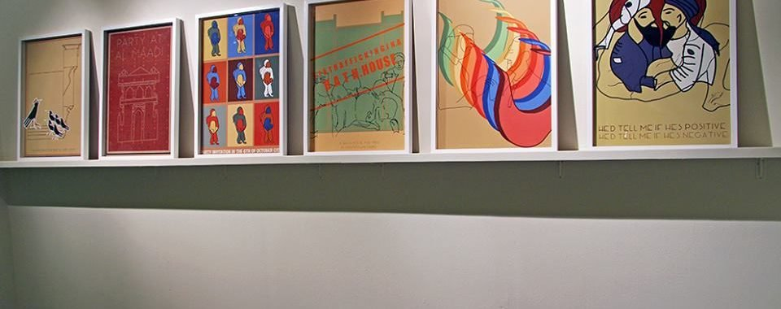

بقلم إسماعيل فايد

من معرض خريجي الفنون البصرية بالجامعة الأمريكية دفعة 2015
أول امبارح قررت أروح أشوف معرض الخريجين لقسم الفنون البصرية لدفعة 2015 (اللي معظهم مواليد التسعينات) في مقر الجامعة الأمريكية بالتجمع الخامس. وكنت قبلها شوفت كذا صورة لبعض أعمال المعرض وكان كذا حد قال على فيسبوك قد إيه المعرض فيه أفكار ملهمة وإن الخريجين بذلوا مجهود كبير في الأعمال اللي عرضوها.
المعرض بيقدم أعمال 15 فنان/ة من الخريجين، في جاليري «الشارقة» في مقر الجامعة الأمريكية بالتجمع الخامس. طبعا مقر الجاليري وبُعده المادي بيثير تساؤلات كتيرة عن مين جمهوره وبيروحوا إزاي ومين يقدر يخش الجامعة أصلًا (أنا دخلت بكارنيه الجامعة القديم). في نفس الوقت لو الجامعة مفترضة أن الجاليري مفتوح للجمهور، طيب الجمهور هييجي منين؟، الأسئلة دائما بتيجي في بالي وأنا في طريقي للجامعة، وباحاول أعرف إيه البوابة اللي مفروض أخش منها (رغم أنها مش أول مرة أروح الجامعة في مقرها الجديد).
المعرض له بانر كبير متعلق على حيطة الجاليري من بره، مكتوب عليه: «تتبع رائحة التنين»، وقبل ما أفكر يعني إيه دخلت وأخدت نسخة من دليل المعرض وقلت أقرا علشان أحاول أفهم إيه علاقة العنوان بمحتوى المعرض. كلمة «تتبع» نفسها هو مصطلح منتشر في معظم معارض الفن المعاصر (لو حد حابب يعرف قد إيه هو مصطلح شائع ممكن يعمل بحث سريع على موقع من مواقع الفن المعاصر زي artsy.com وهيلاقي أكثر من 100 صفحة من 2007 بتستخدم كلمة «تتبع» كعنوان أو وصف للعمل). وبيتهيألي الكلمة مرتبطة بمحاولة فك سحر عملية الخلق أو الإبداع وتفكيكها ونزع صفة الغموض عنها- يعني كأنها عملية ذهنية قابلة للتحليل أو التنظيم في شكل مراحل أو خطوات وده له علاقة بأحد أهم روافد الفن المعاصر وهو العمل المرتبط بمفهوم أو فكرة عن كونه مرتبط بحرفية الإبداع أو ناحية تشكيلية معينة.
رغم أن الفنانين/ات العارضين كلهم صغيرين في السن ولسه ما أنتجوش كفاية بما يسمح إنهم يحللوا نفسهم- وده بالنسبة ليا بيثير تساؤلات عن اختيار كلمة «تتبع»- إلا أنها تجربة مهمة: أن أي فنان/ة يقعد يحلل ويمشي ورا الخطوات الذهنية أو النفسية اللي بتوصله للنتائج الفنية اللي بتطلع في النهاية.
دليل المعرض بيقول إن تتبع مقصود بيه: محاولة استكشاف الأفكار اللي بتيجي في عقلنا واللي ممكن تختفي فجأة أو تتغير من مرحلة إلى مرحلة، ومن خلال المراحل دي بتخلق شبكة معقدة من الترابطات، والتحدي هو إيجاد طريقة لربط الأفكار مع بعضها بشكل بسيط ومفهوم. ودي فعلا ملاحظة في محلها، بس الصراحة أنا مافهمتش برضه إيه علاقة التنين بده كمجاز أو رمز، وليه ريحته؟
المعرض مالوش تيمة معينة، لأنه بالأساس مشاريع تخرج الطلبة، وبالتالي كل عمل بيعكس الاهتمامات والأفكار الخاصة لكل طالب/ة. وبالتالي كان فيه كذا فكرة أو مفهوم بتدور حوله مجموعة من الأعمال: زي فكرة الدين، نلاقي مثلا أعمال «السيموطيقيات (الرموز أو العلامات) الزمنية» لملك ياقوت صالح و«الطقس» لرواء شريف، و«صراع التناقض» لبسنت إبراهيم، و«البقعة الغامضة» لسندريلا ويليام، كلها بتتساءل بشكل أو بآخر عن علاقتنا بمفاهيم دينية معينة أو تراث ديني معين. أعمال تانية بتدور حول فكرة الهوية وعلاقتها بفكرة الشخصية زي «ذهب» ليارا عبدالباسط، و«الذاكرة وفعل الكينونة» لميرنا عباس و«بورتريه شخصي» ليمنى نافع. مجموعة تانية بتدور حول فكرة الإدراك وعلاقته بنوع الحياة اللي الفرد بيعيشها زي «الحياة المتخيلة» لليلي نجاتي، و«سلطة العقل» لمونيكا أبو شوشة و«طفولي» لزينب زيدان و«جامود (كتاتونيا)» لمحمد نور و«مقاربات الحالات الداخلية» لدينا سعيد و«الوحش أسفل السرير» لماريا أشرف حنا. وفي عملين مش مرتبطين قوي بالتيمات دي وهما «المعضلة السرطانية» لتسنيم بريكا و«ألم الشخص الآخر هو الذي آتى بي» لسارة أبو وفا.
الجاليري متقسم دورين، في المدخل في عمل ملك ياقوت صالح «السيموطيقيات (الرموز أو العلامات) الزمنية» وهو عبارة عن مجموعة من المنحوتات اللي معمولة من الأسمنت، مرصوصة جنب بعضها في شكل صف ويكاد يكون هو أعقد عمل في مجمل أعمال الطلبة. فكرة العمل هي قياس الموجات الصوتية للشيخ عبدالباسط عبدالصمد في قراءة لسورة النبأ، وتحويل القياس ده لتكوين مادي أو منحوت تشكيلي. ملك اتكلمت في وصف العمل أنه محاولة لتتبع التكوينات الزمنية لنص زي القرآن، واللي محكومة بعلم ونظام محكم هو أحكام التلاوة وبتفترض أن التكوينات الزمنية اللي بتحكم التلاوة (امتى نمد وامتى نقف وامتى نشدد وامتى نضغم.. إلخ) ممكن تكون إيقاعات متكررة في مجمل أشكال الفن الإسلامي زي العمارة والهندسة مثلا. وبتكمل فرضيتها إن هل ممكن الأشكال أو التكونيات المنحوتة يتم تحويلها إلى صوت مرة تانية؟

من أعمال معرض خريجي الفنون البصرية - الجامعة الأمريكية 2015
الدور الأول بيقدم عمل مونيكا أبو شوشة اللي بتحاول تبحث في معضلة العقل-الجسد وعلاقتهم بالإدراك ومدى ارتباط المعلومات اللي بتديها لينا الحواس في خلق الوعي أو نوع من الإدراك. العمل بيضم تركيب مش مفهوم بالظبط هو بيعمل إيه ولكن بالملاحظة فيه علاقة بين شكل التركيب كآلة وفكرة تحويل مدخلات لشيء ما. الجزء التاني عبارة عن رسوم متحركة لمجموعة من الصور اللي منفصلة عن بعضها البعض بعبارات زي «كنا حمقى» أو «كل الأشياء تنبثق من نقطة واحدة».
الجزء التاني من الدور الأول بيضم عمل محمد نور «جامود (كاتاتونيا)» وجامود هو عبارة عن حالة من التشنج أو التوتر العضلي الناتجة من مجموعة من الأعراض النفسية زي الفصام أو الأعراض العصبية والعمل عبارة عن شاشتين مسطحتين وتسع شاشات صغيرة كلها بتتغير بإيقاع معين يعرض صور طبيعية وصور لخلل بصري والعمل من المفترض أنه يسلط الضوء على فكرة التغيير عبر برهة معينة من الزمن والقواعد اللي بتحكم حاجة زي كده كبداية ونهاية الحركة أو معدل التغير من نقطة معينة إلى نقطة تانية، اللخبطة في استعياب نقطة البداية أو النهاية، زي ما الفنان بيقول، هو اللي ممكن يخلق حالة الكاتاتونيا أو الجامود. أنا حاولت أقف تلات دقايق قدام الشاشات وبعدين شعرت بالدوران فقررت إن أنا مش عايز أمر بحالة جامود أو تشنج وانتقلت للعمل اللي بعديه.

من أعمال معرض خريجي الفنون البصرية - الجامعة الأمريكية 2015
جنب عمل محمد نور هنلاقي عمل «مقاربات الحالات الداخلية» لدينا سعيد وهو عبارة عن تلات خرائط كبيرة لسلسلة معقدة من الأفكار والخواطر اللي دينا حاولت تتبعها وتحللها من خلال طبقات وطبقات من الرموز والمصطلحات الطبية والأدبية لحالة الأرق اللي عندها. للأسف الرموز والنصوص المكتوبة بخط الإيد ما كانتشي واضحة قوي، بس درجة التفاصيل والتشابك الرهيب للأفكار كانت جاذبة جدا للنظر.
قصاد عمل دينا في عمل «ذهب» ليارا عبدالباسط وبرضه مش مفهوم بالنسبة ليا قوي إيه المقصود بيه. العمل عبارة عن تلات صور فوتوغرافية ملونة، كبيرة نسبيا، لتلات سيدات مرسوم على ضهرهم بالحنة حاجة زي ما تكون خرائط لأفريقيا أو منطقة ما في أفريقيا. في شرحها لأفكارها، في كتالوج المعرض (اللي مفروض هيصدر قريب)، اتكلمت عن النوبة كحضارة وتراث ثقافي وإنساني مهمل ومش واخد الاهتمام اللي يستحقه ومأساة النوبيين في التهجير القسري (تلات مرات في أقل من قرن) وتدمير المدن التاريخية للنوبة بسبب السد.
يارا بتقول إن النوبيين هما اللي قدموا الحنة للعالم ومن الواضح أن رسم الخرائط على أجسام السيدات دول ليه علاقة بالحنة وتاريخ النوبة. بس أنا ما فهمتش ليه سيدات؟ وليه السيدات دول مش نوبيات (السيدات اللي في الصور كلهم بشرتهم فاتحة)؟ هل دي حاجة متعمدة للتأكيد على محو وجودهم مثلا؟ وليه الرسم على ضهرهم؟ هل ده اختيار رمزي؟

من أعمال معرض خريجي الفنون البصرية - الجامعة الأمريكية 2015
آخر عملين في الدور الأول هما «الحياة المتخيلة» لـليلي نجاتي، وهو أكتر عمل مبهم بالنسبة ليا، خصوصا أن النص المقتبس في وصف العمل هو نص للفيلسوف الألماني ليبنتز (1646 – 1716)! العمل عبارة عن صورة فوتوغرافية ملونة كبيرة لطفلين (احتمال يكونوا الفنانة وحد من أسرتها؟) وفستان حفلة، زي اللي في أفلام الكارتون، كبير لونه ذهبي مميز متعلق جنب الصورة بشكل غريب وغير مدروس.
العمل الأخير في الدور الأول هو «الذاكرة وفعل الكينونة» لميرنا عباس. هو عبارة عن فيديو مع نص جانبي لحوار. العمل بيدور حوالين فكرة الهوية والذكريات اللي بتكونها. ميرنا بتقول إنها متأثرة بالمخرج الروسي أندريا تاركوفسكي (1932- 1986) وخصوصا فيلمه «المرآة» (1975) اللي تاركوفسكي حاول فيه يخلق معالجة بصرية لفكرة الذاكرة والحلم وحدودهم في تشكيل الإدراك. طبعا محاولة استلهام مخرج بحجم وتأثير تاركوفسكي مغامرة فنية كبيرة وللأسف بتستدعي مقارنات بين اللي الفنانة بتحاول تعمله وبين أعمال ونظريات تاركوفسكي نفسها والنتيجة طبعا أن المقارنة مجحفة والعمل بيبان أنه ساذج وسطحي.
الدور الثاني بيبتدي بتركيب في الفراغ لسارة أبو الوفا، «ألم الآخر هو الذي آتي بي» والتركيب عبارة عن قعدة كبيرة تقريبا معمولة من الأسفنج أو مادة شبهها وتكوينات من القماش والأسفنج متعلقة فوقيها من السقف على شكل نقط مياه كبيرة. في شرحها للعمل سارة بتقول إنها بتحاول تلاقي وسيلة للتواصل تتجاوز الطاقة السلبية عند الفرد ولما فكرت في وحدة للتواصل من داخل الجسم اختارت شكل الخلية العصبية لأنها الخلية المسئولة عن نقل الرسائل ما بين أعضاء الجسم المختلفة. الشكل اللي فكرت فيه هو تركيبات الفنان أرنستو نيتو اللي سارة تقريبا نقلتها بشكل كبير- الفرق أنها ربطت الشكل بالخلايا العصبية وفكرة التواصل.
ورجوعا لفكرة الدين، جنب تركيب سارة فيه تركيب فيديو لرواء شريف «الطقس» واللي كان مزعج بشكل كبير من ناحية الصوت. التركيب بيعكس تلات قنوات فيديو على شاشات بيضا محطوطة بزوايا مختلفة واللي عمل تأثير بصري ظريف، بس محتوى الفيديو بيعكس إشكالية كبيرة في فهم معنى الطقس نفسه.

من أعمال معرض خريجي الفنون البصرية - الجامعة الأمريكية 2015
رواء بتتساءل في شرحها للعمل هل من الممكن أنها تطرح أسئلة عن وجود ربنا أو عن سيطرته على العالم وعن فكرة الإيمان، اللي دفعها بالتالي للتساؤل عن الموت وما بعد الموت. التساؤل عن الموت خلاها تفكر في الجسد ومراحل تحلله واللي خلاها تفكر في فكرة الطقوس اللي بنعملها علشان ننقل الجسد من حالة للتانية أو لمكان تاني (الوضوء مثلا). رواء فكرت تخترع الطقس الخاص بيها واللي بيضم الغرق، التسمم بالمياة وأخيرا ضرب الراس لتدمير بعض من الخلايا العصبية. أنا ما قدرتش أتابع الفيديوهات التلاتة لأن الصوت كان سيئ، بس طبعا موضوع زي الموت أو طقوس الطهارة أو التجميل أو فكرة الطقس نفسه كنسق اجتماعي أعقد بكتير من تصورات الفنانة اللي في نظري اختصرت حاجات كتيرة اختصار مخل وبيفصل الظواهر عن بعضها تماما. على الرغم من إن التركيب نفسه بصريا فكرته متنفذة بشكل مميز وبيوري قد إيه الاستيعاب البصري للفنانة فيه حساسية كبيرة.
وفي نفس سياق الأعمال اللي بتتناول الدين، عمل «البقعة الغامضة» لسندريلا وائل ويليام اللي عبارة عن سلسلة من اللوحات المرسومة اللي هي خليط بين أسلوب فن الكوميكس وقصصه وأسلوب الرمزيات وفن المايا الميكسيكي، بشكل أو بآخر. اللوح بتحاول تتناول مراحل تحلل الجسد أو فكرة البرزخ بس بشكل تهكمي أكثر من أي حاجة تانية.
وعلى نفس المنوال عمل «صراع التناقضات» لبسنت إبراهيم واللي عبارة عن مجموعة من البوسترات المرسومة أشبه بأسلوب «آرت دكو» واللي هي بتتناول البعد الجنسي في المنمنمات العربية. فكرة التساؤل حول البعد المثلي في التراث العربي فكرة استشراقية قديمة وما زالت بتثير جدل كثير في أوساط المؤرخين والأكاديمين (على سبيل المثال جوزيف مسعد وكتابه اشتهاء العرب اللي بيطرح فيه رؤية الشخصية العربية ما قبل الحداثة وعجز مصطلحات زي «مثلية» للتعبير عن الشخصية دي). تحليل بسنت غير أنه يشي بقدر كبير من عدم الاطلاع على تاريخ المنمات نفسه في قدر كبير من التخمين- مين قال إن المدرسة المصرية في فن المنمات اتبعت نفس المعايير أو الأساليب زي المدرسة الفارسية؟ أو افتراض أن غياب المرأة وجسدها عن التصوير في المنمات (ملاحظة غير صحيحة) يعني انتشار المثلية؟ افتراضات الفنانة بتعبر عن نقص كبير في الاطلاع وافتراضات مغلوطة وسطحية يكاد يكون الغرض منها هو إثارة الجدل ليس إلا.
في الناحية التانية من تركيب «الطقس» فيه عمل ماريا أشرف حنا «الوحش أسفل السرير»، اللي هو عبارة عن شاشتين تليفزيون بيعرضوا فيلمين رسوم متحركة وفوقيهم لوحات مرسومة وملونة بخط الإيد بتشرح العمل. العمل بيتناول الجانب المخفي من قصص والت ديزني اللي بتاخد قصص وتغير في محتواها لتنشر صور مثالية وغير حقيقية لترسخ لمفهوم النهاية السعيدة.
ماريا بتفترض أن فيه ثنائية بين أعمال الإخوين جريم وأعمال ديزني، لأن لو ديزني ركز على الجانب الخيالي المثالي يبقى الأخوين جريم ركزوا على الجانب المرعب المخيف وده في نظري اعتقاد مش صحيح لأن الأخوين جريم كان شغلهم الشاغل هو تجميع قصص شعبية بغرض دراستها لغويا وتاريخيا. ف ما كانش الغرض فرض نهاية أو غيرها على القصة زي ما ديزني عمل. طبعا بجانب فكرة أن أعمال ديزني تم تناولها بشكل ساخر ونقدي من قبل فنانين زي جويس بنساتو وانريك تشيجويا وجوتفريد هلنفاين بأساليب مختلفة وطرق فيها تعقيد وعمق أكثر من كده.

من أعمال معرض خريجي الفنون البصرية - الجامعة الأمريكية 2015
الأعمال اللي مرتبطة بفكرة الإدراك وإزاي بتتأثر بخواص الحاجات اللي احنا بنشوفها، هي أعمال «بورتريه شخصي» ليمنى نافع و«طفولي» لزينب زيدان. عمل يمنى هو عمل متعدد الوسائط عبارة عن رسوم متحركة، وسلسلة صور فوتوغرافية أبيض وأسود وتركيب نحتي، ومجسم بالشمع، وشاشة إلكترونية، كلها غرضها هو رصد شعور الفنان عند رسم البورتريه من خلال زمنية الرسم. العمل بيلعب على فكرة الذاكرة وصدمة اكتشاف التغيير اللي بيحصل لما إدراكنا لحاجة معينة بيمر بفترة زمنية محددة.
عمل زينب «طفولي» بيتكون من تلات رسومات أبيض وأسود وفاترينة لمجموعة من تماثيل الشوربيم من معدن (يبدو أنه نحاس) وفاترينة تانية بكذا رف، عليها برضه مجموعة من تماثيل الشاروبيم المعمولة من الشمع (أو البلاستيك؟). زينب بتتناول فكرة التمويه وإزاي هو طريقة لإخفاء الحاجة اللي احنا بنحاول نشوفها من خلال أساليب عدة، منها خلق أنماط من أشكال معينة بتكون هي المرئية ولكن الحاجة نفسها صعبة الرؤية. من الناحية الشكلية زينب فعلا خلقت أنماط لأشكال ممكن تحديد ملامحها من بعيد لكن علشان نمسك تفاصيلها أو محتواها كان صعب. علاقة اختيار الشاروبيم ما كانتش واضحة بالنسبة ليا رغم أني شخصيا استمتعت بالجزء الشكلي والتشكيلي للعمل.
العمل اللي شوية منفرد بذاته هو عمل «معضلة سرطانية» لتسنيم بريكا وهو عبارة عن كذا حاجة معروضة جنب بعضها (شنطة – لوحة خشب – مج – جزمة) وكلها فيها تكوينات شبه دائرية في حتت مختلفة فيها. تسنيم بتطرح تساؤل عن السرطان كعرض بيحصل للبني آدمين، بس لو ممكن العرض اللي بينتج خلايا مشوهة أو «سرطانية» نقدر نشوف ليه انعكاس في حاجة تانية. فممكن نشوف التنوعيات دي منعكسة على الرغبات المادية في حياتنا أو الحاجات المادية اللي كل ما استحوذنا عليها بتبين نوع من الخلل فينا وهل ممكن يبان خلل في الحاجات دي نفسها. تنفيذ تسنيم لفكرتها كان تقريبا غير مرئي وبيتطلب قدر معين من التركيز والتمعن في الحاجات المعروضة- ملاحظة بترسخ من فكرة الخلل (زي السرطان) اللي ممكن ما يبقاش واضح أو مرئي لينا لكن ليه وجود بأشكال غير معتادة